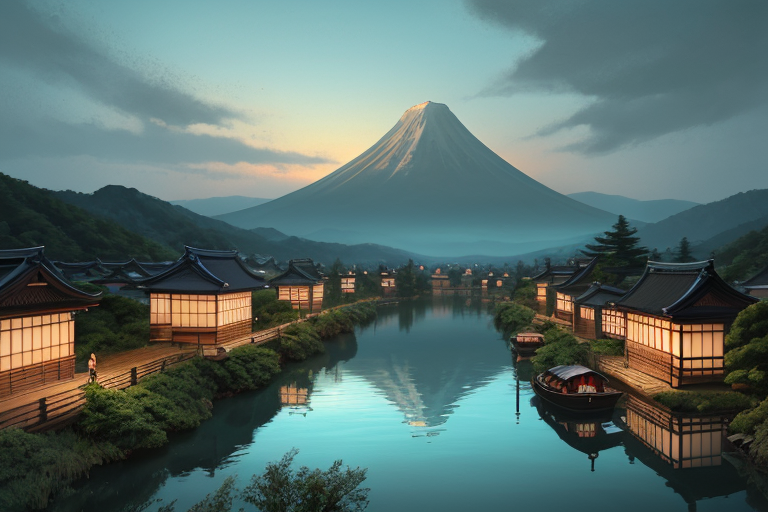
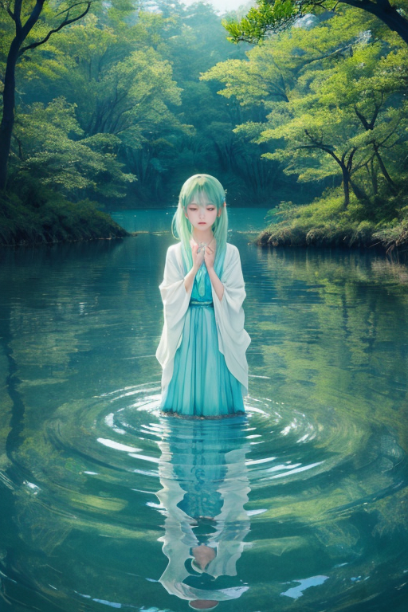
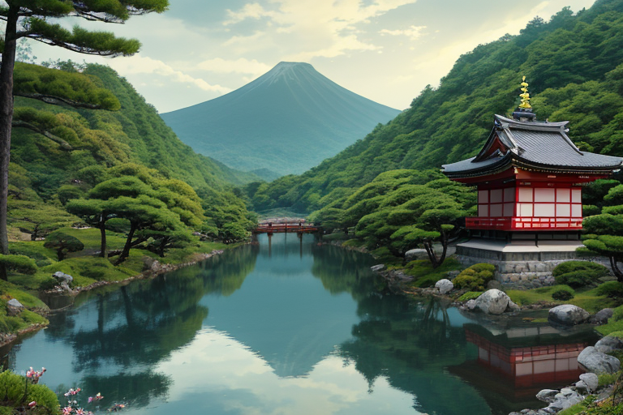
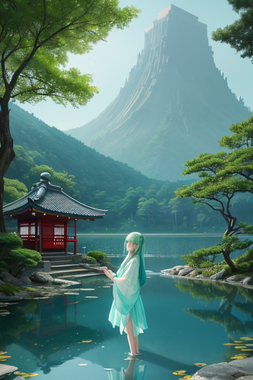
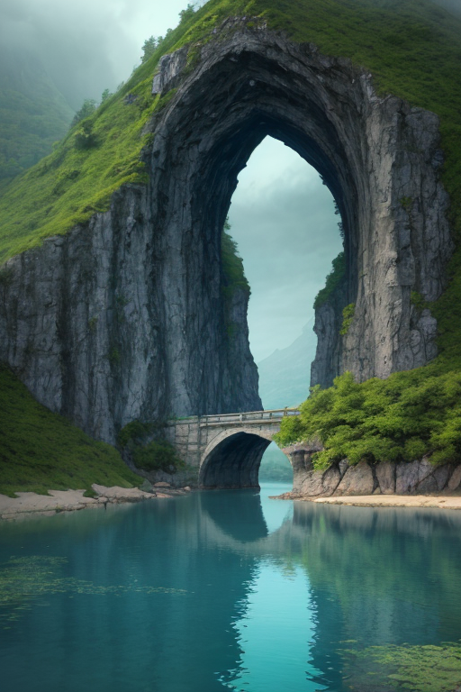

第一章 現実の滋賀
あなたはまだ気づいていない。この土地にも、王がいることを。
琵琶湖の水は、今日も静かに山々を映している。海のない県で、この巨大な湖は時に内海のように、時にただの水たまりのように見える。境界だ。内陸でありながら、ここには「内」と「外」を分ける穏やかで確かな境目がある。比叡山の山肌は、千年を超える祈りの記憶を沈殿させ、近江八幡の水路には、かつて「売り手よし、買い手よし、世間よし」の精神を舟で運んだ商人たちの気配が、かすかに流れている。
この土地の歪みは、静かだ。大地の底でプレートが忍び寄る軋みは、湖面を揺らす風よりも目立たない。しかし、時折、湖底から湧き上がるような微振動がある。それは、蓄積された記憶の重みなのか、それとも未来から訪れる揺れの予兆なのか。
湖岸を歩く人も、城下町で働く人も、そのほとんどは気づかない。ただ、ふと立ち止まり、なぜか懐かしい郷愁に胸を締め付けられることがある。それは、この土地を守る「何か」が、溜まりすぎた記憶の澱を、そっとかき混ぜているからかもしれない。

第二章 歪みの兆候
比叡山延暦寺の杉並木を、異なる言葉が行き交う風が抜けていく。観光客の増加は、この地に新しい記憶の層を積み重ねていた。それは悪いことではない。しかし、湖王オウミリア・メモリアは、その風の中に、僅かな「ずれ」を感じ取った。訪れる人々の期待や、通り過ぎるだけの視線が、土地に染み込んだ深い時間の層を、無意識に剥がそうとしている。それは物理的な歪みではない。記憶の連続性に対する、目に見えない圧力だった。
主席妖精メモリアルが、湖面に浮かぶ微かな光の粒を指さす。「新しい感情の沈殿です。郷愁とは少し違う、もどかしさのようなものが混じっています」
王は静かにうなずいた。彼の役目は、新しいものを拒むことではない。流入する膨大な「今」の記憶と、土地が育んできた「過去」の記憶との均衡を、微調整することだ。彼は湖岸に立ち、掌をかざした。琵琶湖の水面に、かすかな波紋が幾重にも広がる。それは、訪れる者たちの刹那的な感動を、そっと受け止め、沈殿させるための浄化のリズム。流れ込む記憶を止めず、しかし、この土地の核となる記憶が流されないよう、静かに濾過し続ける。

第三章 王の葛藤
比叡山延暦寺の杉並木を、観光バスが何台も登っていく。車内の興奮は、妖精ビワリアを通じて湖王に伝わる。新しいレストラン、インスタ映えする撮影スポット、次々と流入する「今」の喧噪。彼は彦根城天守に立ち、湖面を見つめた。かつて近江商人が持ち帰った異国の記憶は、ゆっくりと時間をかけてこの土地の色に染まった。だが今は、あまりにも速い。
「留めねば」。懐古の衝動が彼を駆る。流入する記憶の波を堰き止め、このままの滋賀を保存したい。掌を握りしめれば、湖面の波紋は消え、水は鏡のように静止するだろう。しかし、その時、ふと近江八幡の水郷を思い出した。運河は流れてこそ、清い。止めた水は淀み、腐る。
彼は目を閉じた。記憶は流れるべきか。留まるべきか。答えは出ない。ただ、彼が為すべきことは、流れを完全に止めることでも、無防備にさらすことでもないと、直感した。微調整。流入する「今」を全ては拒まず、しかしこの土地の核となる「近江商人の精神」や「信仰の歴史」といった沈殿物が、激流に洗い流されないよう、緩やかに濾過すること。彼は握った掌を、静かに開いた。

第四章 妖精との対話
竹生島の宝厳寺の石段に腰を下ろし、オウミリアは眼下に広がる琵琶湖の水面を見つめていた。メモリアルがそっと隣に座る。
「王様は、まだお迷いですね」
「……記憶を守るとは、何もかも留めることなのか」
「違います」メモリアルの声は湖面のさざ波のように柔らかい。「留めるだけでは、それは淀みになります。この湖だって、流れ込む川の水を全て拒めば、やがては腐敗するでしょう」
彼女は掌を上げ、小さな光の粒を浮かべた。それは、近江商人が旅先で交わした約束の記憶、比叡山の僧が写経に込めた祈りの記憶、そして昨日、湖畔で家族が笑った記憶の断片だった。
「私たちは、全ての記憶を沈殿させるのではありません。流れゆくものは流れさせ、ただ、この土地の核となるもの、人々の心の礎となる記憶の結晶だけを、そっと湖底に沈め、守るのです。出会いは別れを内包し、別れは新たな出会いの種です。全てを抱え込もうとすれば、王様も、この湖も、潰れてしまいます」
オウミリアは、流れ込む無数の記憶の光の粒を見つめた。全てを抱き止めようとする自らの在り方こそが、最大の「歪み」であったかもしれない。

第五章 微調整と余韻
比叡山の麓を流れる風は、湖面を撫でて微かな波紋を広げる。オウミリアは、その波紋が次第に消えていく様を静かに見つめていた。全てを抱え止めようとする意志を解き、彼は調整者としての在り方に立ち戻った。
近江八幡の水郷をゆく観光船の舳先が、古い石橋に僅かに触れそうになった瞬間、一陣の風が船首を数センチ押しやった。彦根城天守から転落しそうになったカメラを、ひときわ強い突風が城内へと戻した。それは、災害を消すことではなく、偶然の連鎖をほんの少し調整する、微かな介入である。
湖王の仕事は、文化や人の流れそのものを変えることではない。流れがこの土地の核を洗い流さないよう、そっと防波堤となることだ。近江商人の「三方よし」の精神、比叡山の祈り、湖国の暮らしの記憶。それらが沈殿し、結晶となるための、静かな時間を守ること。
彼はもう、全ての記憶を留めようとはしない。流れるものは流れゆく。ただ、この湖が、この土地が忘れてはならないほんの一握りの輝きを、深い青の底で、そっと照らし続ける。
あなたの町にも、王がいる。